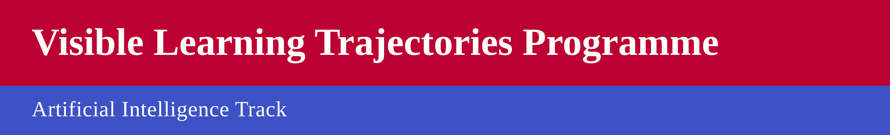
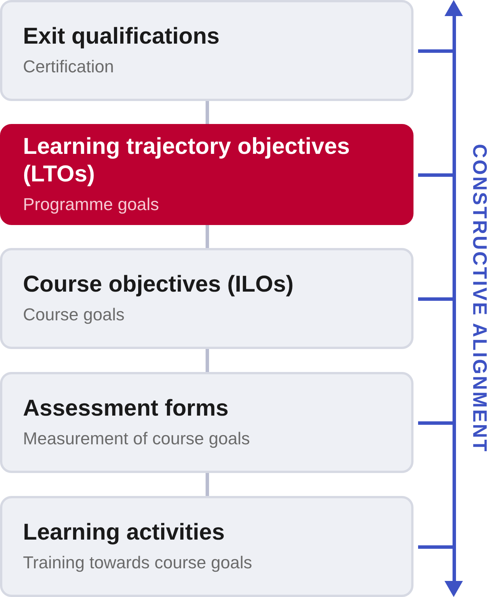
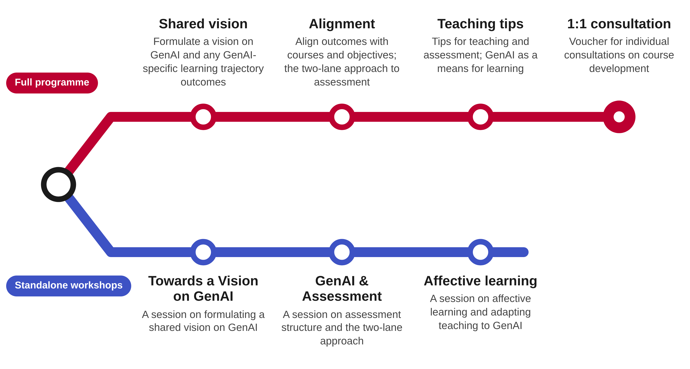
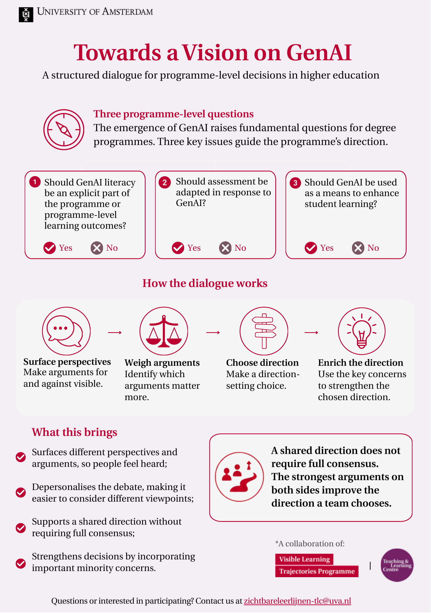
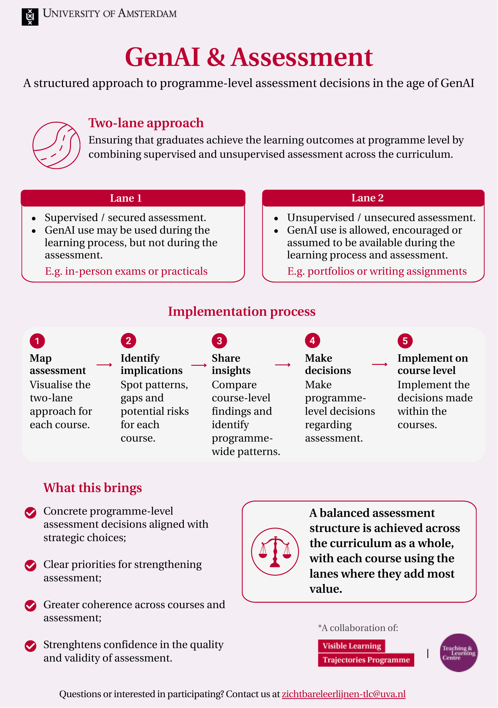
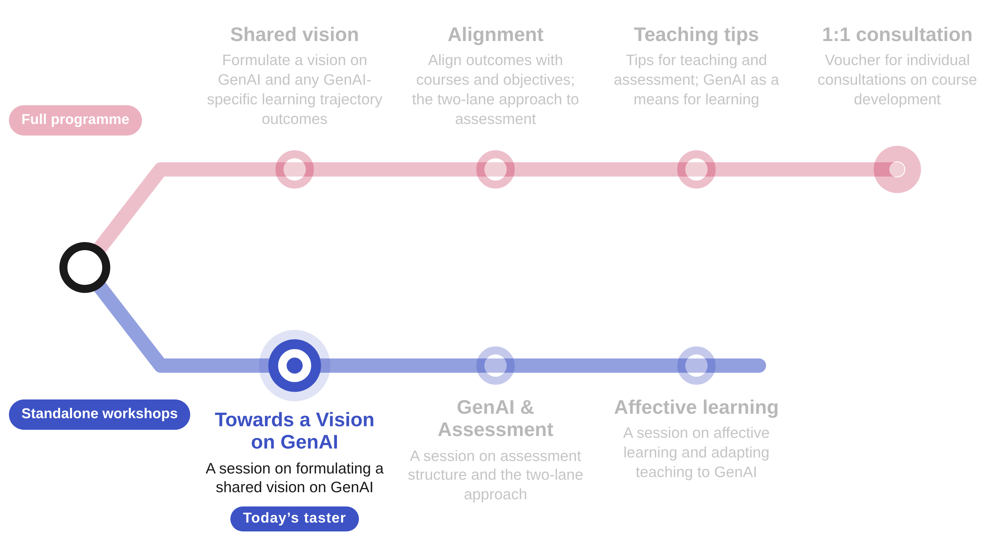
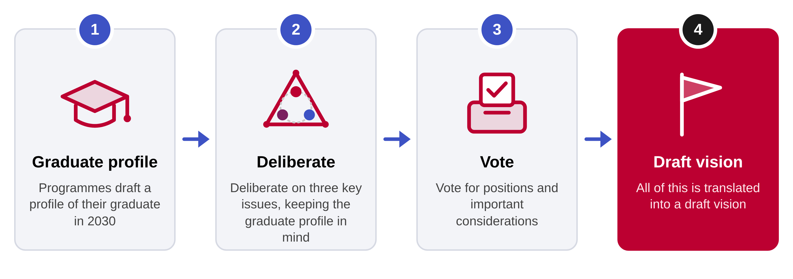
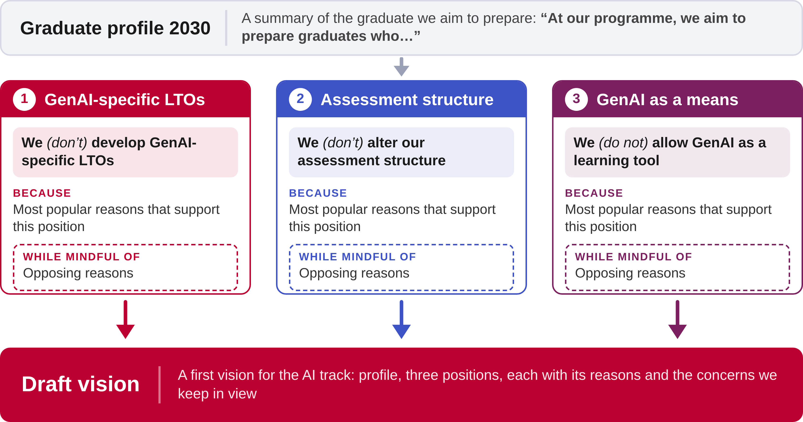

<!DOCTYPE html>
<html lang="en">
<head>
    <meta charset="utf-8" />
    <meta name="viewport" content="width=device-width, initial-scale=1.0, maximum-scale=1.0, user-scalable=no" />

    <title></title>
    <link rel="stylesheet" href="../_shared/1cc66e6465f6/dist/reset.css">
    <link rel="stylesheet" href="../_shared/1cc66e6465f6/dist/reveal.css" />
    <link rel="stylesheet" href="css/slides-extended.css" />
    <link rel="stylesheet" href="../_shared/1cc66e6465f6/dist/theme/white.css" id="theme" />
    <link rel="stylesheet" href="../_shared/1cc66e6465f6/plugin/highlight/zenburn.css" />
    <link rel="stylesheet" href="../_shared/1cc66e6465f6/plugin/customcontrols/style.css">


    <link rel="stylesheet" href="css/vlt-icab.css" />

    <script defer src="../_shared/1cc66e6465f6/dist/fontawesome/all.min.js"></script>

    <script type="text/javascript">
        function pageInIframe() {
            return (window.location !== window.parent.location);
        }

        let forgetPop = true;
        function onPopState(event) {
            if(forgetPop){
                forgetPop = false;
            } else if( pageInIframe()) {
                parent.postMessage(event.target.location.href, "app://obsidian.md");
            }
        }
        window.onpopstate = onPopState;
        window.onmessage = event => {
            if(event.data == "reload"){
                window.document.location.reload();
            }
            forgetPop = true;
        }

        function fitElements() {
            const itemsToFit = document.getElementsByClassName('fitText');
            for (const item in itemsToFit) {
                if (Object.hasOwnProperty.call(itemsToFit, item)) {
                    const element = itemsToFit[item];
                    fitElement(element, 1, 1000);
                    element.classList.remove('fitText');
                }
            }
        }

        function fitElement(element, start, end) {

            let size = (end + start) / 2;
            element.style.fontSize = `${size}px`;

            if (Math.abs(start - end) < 1) {
                while (element.scrollHeight > element.offsetHeight) {
                    size--;
                    element.style.fontSize = `${size}px`;
                }
                return;
            }

            if (element.scrollHeight > element.offsetHeight) {
                fitElement(element, start, size);
            } else {
                fitElement(element, size, end);
            }
        }

        document.onreadystatechange = () => {
            fitElements();
            if (document.readyState === 'complete') {
                if (pageInIframe() && window.location.href.indexOf("?export") != -1){
                    parent.postMessage(event.target.location.href, "app://obsidian.md");
                }
                if (window.location.href.indexOf("print-pdf") != -1){
                    let stateCheck = setInterval(() => {
                        clearInterval(stateCheck);
                        window.print();
                    }, 250);
                }
            }
        };
    </script>
</head>

<body>
    <div class="reveal">
        <div class="slides"><section data-separator="
?
---
?
" data-separator-vertical="
?
--
?
" data-separator-notes="note:" data-markdown><script type="text/template"><!-- .slide: class="title-slide drop" data-state="vlt-title" template="" -->
<div class="" style="position: absolute; left: 0px; top: 0px; height: 700px; width: 960px; min-height: 700px; display: flex; flex-direction: column; align-items: start; justify-content: center" absolute="true">

# Redesign your curriculum for GenAI




<p class="vlt-title-meta"><span class="vlt-name">Vincent Tijms</span><br><span class="vlt-date">11 November 2026</span></p>

<aside class="notes"><p>‘Towards a vision’ meeting, this is a taster of the first session programmes do during the VLT-AI track.</p>
</div></aside></script></section><section data-separator="
?
---
?
" data-separator-vertical="
?
--
?
" data-separator-notes="note:" data-markdown><script type="text/template"><!-- .slide: class="top-split drop" template="" -->
<div class="" style="position: absolute; left: 0px; top: 0px; height: 700px; width: 960px; min-height: 700px; display: flex; flex-direction: column; align-items: start; justify-content: center" absolute="true">

## Visible learning trajectories

<split gap="3">

<div style="flex:none;width:443.52px;margin-left:4.48px;font-size:0.86em;align-self:center;margin-top:6.8px">

- Visible Learning Trajectories is a methodical approach to curriculum design
- It works by inserting **learning trajectory objectives** into the constructive alignment of educational components
- Once completed, this affords easier redesign

</div>




</split>

<aside class="notes"><p>The Visible Learning Trajectories programme at UvA is an existing methodology, that most bachelor programmes and some master programmes have implemented. It works by adding a constructive alignment layer between courses and exit qualifications, using the same logic as course objectives to, but then formulated at the achievement level of the programme. Multiple course objectives together lead to achievement of the learning trajectory objective. The method is more elaborate than this, but for now the key thing is that it leads to curricula in which alignment both complete and visible. This affords focused adaptation of the curriculum.</p>
</div></aside></script></section><section data-separator="
?
---
?
" data-separator-vertical="
?
--
?
" data-separator-notes="note:" data-markdown><script type="text/template"><!-- .slide: class="top-split drop" template="" -->
<div class="" style="position: absolute; left: 0px; top: 0px; height: 700px; width: 960px; min-height: 700px; display: flex; flex-direction: column; align-items: start; justify-content: center" absolute="true">

## Track Artificial Intelligence

<split gap="3">

<div style="flex:none;width:443.52px;margin-left:4.48px;font-size:0.86em;align-self:center;margin-top:6.8px">

- Joint project of VLT programme and TLC Science
- Programmes with VLT implementation can join this thematic track on GenAI integration
- GenAI is changing not only what students need to know and master, but also how they learn, work, and develop as professionals
- This affects curricula across levels

</div>

<div style="flex:none;margin-left:-64.8px">


</div>

</split>

<aside class="notes"><p>And of course adaptation is necessary due to GenAI. If you look at the whole ladder of constructive alignment, you can see GenAI impact each step. (Yes, technically learning activities are not &#39;below&#39; assessment forms).</p>
</div></aside></script></section><section ><section data-separator="
?
---
?
" data-separator-vertical="
?
--
?
" data-separator-notes="note:" data-markdown><script type="text/template"><!-- .slide: class="drop" template="" -->
<div class="" style="position: absolute; left: 0px; top: 0px; height: 700px; width: 960px; min-height: 700px; display: flex; flex-direction: column; align-items: start; justify-content: center" absolute="true">

## Track Artificial Intelligence




<aside class="notes"><p>To this end, a track was developed that helps programmes adapt at various levels. this is done by TLC Science in a three-session structure, with a voucher for 1:1 consulting. We also found programmes sometimes want to do a single session, so we&#39;re increasingly offering those. Today, we will focus on step 1, shaping a vision on the use of GenAI in your curriculum. We will have to pretend we are a programme together!</p>
</div></aside></script></section><section data-separator="
?
---
?
" data-separator-vertical="
?
--
?
" data-separator-notes="note:" data-markdown><script type="text/template"><!-- .slide: class="drop" template="" -->
<div class="" style="position: absolute; left: 0px; top: 0px; height: 700px; width: 960px; min-height: 700px; display: flex; flex-direction: column; align-items: start; justify-content: center" absolute="true">

<div class="infog">







</div>
</div></script></section></section><section data-separator="
?
---
?
" data-separator-vertical="
?
--
?
" data-separator-notes="note:" data-markdown><script type="text/template"><!-- .slide: class="drop" template="" -->
<div class="" style="position: absolute; left: 0px; top: 0px; height: 700px; width: 960px; min-height: 700px; display: flex; flex-direction: column; align-items: start; justify-content: center" absolute="true">

## Track Artificial Intelligence


</div></script></section><section data-separator="
?
---
?
" data-separator-vertical="
?
--
?
" data-separator-notes="note:" data-markdown><script type="text/template"><!-- .slide: class="drop" template="" -->
<div class="" style="position: absolute; left: 0px; top: 0px; height: 700px; width: 960px; min-height: 700px; display: flex; flex-direction: column; align-items: start; justify-content: center" absolute="true">

## Towards a vision on GenAI




<aside class="notes"><p>Here&#39;s the setup for a three-hour session. Programmes first draft a profile of their graduate in 2030. They then deliberate on the three key issues, keeping that profile in mind - any changes to the curriculum should be oriented towards their profile, which is a rough mental model of exit qualifications. Next, on the basis of their deliberation, they vote for positions and important considerations, and everything is translated into a draft vision.</p>
</div></aside></script></section><section data-separator="
?
---
?
" data-separator-vertical="
?
--
?
" data-separator-notes="note:" data-markdown><script type="text/template"><!-- .slide: class="drop" template="" -->
<div class="" style="position: absolute; left: 0px; top: 0px; height: 700px; width: 960px; min-height: 700px; display: flex; flex-direction: column; align-items: start; justify-content: center" absolute="true">

## Three key issues for programmes

<!-- TODO visual: tree diagram. Root: "Issues to consider when deciding about GenAI use in an educational programme" with three branches below -->

1. Do we want GenAI-specific learning trajectory objectives?
2. Do we want to alter the assessment structure in response to GenAI?
3. Do we want to employ GenAI as a means to enhance learning?

<aside class="notes"><p>These are the questions we&#39;ve seen pop up in teacher teams. They are not all the questions one could pose, but they are the ones that complicate strategic planning if left unanswered. They have to do with what the team <em>wants</em> for the programme at the shared level. Developing a vision comes down to reaching mutual agreement on at least these three issues.</p>
</div></aside></script></section><section data-separator="
?
---
?
" data-separator-vertical="
?
--
?
" data-separator-notes="note:" data-markdown><script type="text/template"><!-- .slide: class="drop" data-visibility="hidden" template="" -->
<div class="" style="position: absolute; left: 0px; top: 0px; height: 700px; width: 960px; min-height: 700px; display: flex; flex-direction: column; align-items: start; justify-content: center" absolute="true">

## Issue 1: Do we want GenAI-specific learning trajectory objectives?

Are there knowledge and skills related to GenAI that are important enough to set as **goals achieved by the curriculum as a whole**?

Consider:

- What are risks and opportunities of GenAI within the field?
- Should we teach critical evaluation of GenAI output?
- Should we teach transparent and responsible use of GenAI?
- Should our graduates have basic understanding of GenAI principles?

<aside class="notes"></div></aside></script></section><section data-separator="
?
---
?
" data-separator-vertical="
?
--
?
" data-separator-notes="note:" data-markdown><script type="text/template"><!-- .slide: style="font-size: 0.85em" class="drop" data-visibility="hidden" template="" -->
<div class="" style="position: absolute; left: 0px; top: 0px; height: 700px; width: 960px; min-height: 700px; display: flex; flex-direction: column; align-items: start; justify-content: center" absolute="true">

## Issue 2: Do we want to alter assessment structure in response to GenAI?

How can assessment remain valid and meaningful in a context where GenAI is widely available?

Consider:

- What do we truly wish to assess?
- Which assessment forms are appropriate, given specific ILOs and the availability of GenAI?
- How can assessment make learning processes, choices, and reflections visible (not just outcomes)?
- How can the use of GenAI become a transparent and accountable part of academic work?
- How do the different assessment forms within our programme relate to each other?
- Which assessment designs encourage responsible and reflective use of GenAI, rather than avoidance or outsourcing?
</div></script></section><section data-separator="
?
---
?
" data-separator-vertical="
?
--
?
" data-separator-notes="note:" data-markdown><script type="text/template"><!-- .slide: class="drop" data-visibility="hidden" template="" -->
<div class="" style="position: absolute; left: 0px; top: 0px; height: 700px; width: 960px; min-height: 700px; display: flex; flex-direction: column; align-items: start; justify-content: center" absolute="true">

## Issue 3: Do we want to employ GenAI as a means to enhance learning?

When can GenAI contribute to student learning?

Consider:

- Could GenAI be used to complement teaching?
- Which risks could GenAI pose for learning?
- How can we assure “productive friction”?
- Could GenAI provide novel, valuable learning experiences?
- Could GenAI help with scaffolding?
</div></script></section><section data-separator="
?
---
?
" data-separator-vertical="
?
--
?
" data-separator-notes="note:" data-markdown><script type="text/template"><!-- .slide: class="drop" template="" -->
<div class="" style="position: absolute; left: 0px; top: 0px; height: 700px; width: 960px; min-height: 700px; display: flex; flex-direction: column; align-items: start; justify-content: center" absolute="true">

## Rotating along the issues

<div class="rot-stage">
<span class="fragment f1" data-fragment-index="1"></span>
<span class="fragment f2" data-fragment-index="2"></span>
<svg width="800" height="470" viewBox="0 0 800 470">
<polygon points="400,55 586,377.5 214,377.5" fill="none" stroke="#bc0031" stroke-width="5" stroke-linejoin="round"></polygon>
<circle cx="400" cy="270" r="107.5" fill="none" stroke="#c9c9c9" stroke-width="3" stroke-dasharray="3 9" stroke-linecap="round"></circle>
<circle cx="400" cy="55" r="11" fill="#bc0031"></circle><circle cx="586" cy="377.5" r="11" fill="#bc0031"></circle><circle cx="214" cy="377.5" r="11" fill="#bc0031"></circle>
</svg>
<div class="rot-issue" style="left:448px;top:18px;width:180px"><b>Issue 1</b>GenAI-specific learning trajectory objectives</div>
<div class="rot-issue" style="left:604px;top:358px"><b>Issue 2</b>Assessment structure in response to GenAI</div>
<div class="rot-issue" style="left:-4px;top:358px;text-align:right"><b>Issue 3</b>GenAI as a means to enhance learning</div>
<div class="rot-center">&#8635;</div>
<div class="rot-badge" style="--b:0deg;background:#bc0031">1</div>
<div class="rot-badge" style="--b:120deg;background:#3d52c4">2</div>
<div class="rot-badge" style="--b:240deg;background:#7b1f5f">3</div>
<div class="rot-caption"><span class="c0">Start: each group at one issue</span><span class="c1">Rotation 1</span><span class="c2">Rotation 2: every group has seen every issue</span></div>
</div>

<aside class="notes"><p>The way we do that is to have all three issues in distinct corners of the room, on whiteboards. The team is split into three and Groups rotate along the three boards (click to advance). Each number starts at one issue and rotates twice, so every group meets every issue once and brainstorms reasons for and against the position. After these deliberative steps, everybody gets to vote for a position and for reasons - which means we might see most votes for a YES position, but with strong weight on a set of NO-reasons - the voice of the minority we should also bring into the vision.</p>
</div></aside></script></section><section data-separator="
?
---
?
" data-separator-vertical="
?
--
?
" data-separator-notes="note:" data-markdown><script type="text/template"><!-- .slide: class="drop" template="" -->
<div class="" style="position: absolute; left: 0px; top: 0px; height: 700px; width: 960px; min-height: 700px; display: flex; flex-direction: column; align-items: start; justify-content: center" absolute="true">

## We will do it differently

<!-- TODO visual: flow diagram. 2030 profile + Issue deliberation + Voting for positions and reasons → Vision -->

- We will skip on the 2030 profile
- We will only _pretend_ to be a programme
- We will not rotate along the issues
- But we will discuss all issues in groups and then go through the voting process
</div>

<aside class="notes"><p>we don&#39;t have three hours. we don&#39;t even have a programme! so we will skip on some portions and only do one round of the rotation before we vote. This gives you a taste of the process.</p>
</aside></script></section><section data-separator="
?
---
?
" data-separator-vertical="
?
--
?
" data-separator-notes="note:" data-markdown><script type="text/template"><!-- .slide: class="drop" template="" -->
<div class="" style="position: absolute; left: 0px; top: 0px; height: 700px; width: 960px; min-height: 700px; display: flex; flex-direction: column; align-items: start; justify-content: center" absolute="true">

## Let’s collect thoughts

### Deliberation

- We have boards for the different issues, stated as a position
- For each board, a group thinks of several *reasons* in favour or against the position. Per person:
  - Formulate at least one **yes, because…**
  - Formulate at least one **no, because…**
- Each board needs a **facilitator** to make sure everyone is heard
- See handout for talking points to help with deliberation
- Focus on brainstorming reasons, not resolving debates!
- After six minutes, we share the reasons

<aside class="notes"><p>We&#39;re a large group, so this setup is mostly there to make sure everybody is heard at each board.</p>
</div></aside></script></section><section data-separator="
?
---
?
" data-separator-vertical="
?
--
?
" data-separator-notes="note:" data-markdown><script type="text/template"><!-- .slide: class="drop" template="" -->
<div class="" style="position: absolute; left: 0px; top: 0px; height: 700px; width: 960px; min-height: 700px; display: flex; flex-direction: column; align-items: start; justify-content: center" absolute="true">

## Let’s collect thoughts

### Facilitating a board

- Your role: make sure everyone is heard, and keep the focus on **reasons, not debate**
- Write each reason on the board in the speaker’s own words, and check it back
- If a reason triggers an argument, park it: capture the counterpoint as a new reason and move on
- Invite the quieter voices: *what haven’t we heard yet?*
- Keep an eye on the time, so there is room to share the reasons

<aside class="notes"><p>Three boards, three facilitators, about eight or nine people per board. At this scale, facilitation is what keeps the deliberation inclusive.</p>
</div></aside></script></section><section data-separator="
?
---
?
" data-separator-vertical="
?
--
?
" data-separator-notes="note:" data-markdown><script type="text/template"><!-- .slide: class="drop" template="" -->
<div class="" style="position: absolute; left: 0px; top: 0px; height: 700px; width: 960px; min-height: 700px; display: flex; flex-direction: column; align-items: start; justify-content: center" absolute="true">

## Let’s collect thoughts

### Voting instructions

- For each issue, vote for the **position** (yes or no) you currently lean towards
  - You do not have to *fully* agree, vote for what feels most workable now
- Then, vote for the **three reasons** you find most important, regardless of their column
  - Distribute your votes as you wish (one per reason)

<aside class="notes"><p>You can vote for reasons that do not support your position, but that you find important nonetheless.</p>
</div></aside></script></section><section data-separator="
?
---
?
" data-separator-vertical="
?
--
?
" data-separator-notes="note:" data-markdown><script type="text/template"><!-- .slide: class="drop" template="" -->
<div class="" style="position: absolute; left: 0px; top: 0px; height: 700px; width: 960px; min-height: 700px; display: flex; flex-direction: column; align-items: start; justify-content: center" absolute="true">

## Let’s collect thoughts

- What stands out if we consider the various reasons and votes?
- Is there a pattern to the answers?
- Does this reveal tensions or dilemmas?
- Which concerns/positions need to be explicit in a vision on GenAI?

<aside class="notes"></div></aside></script></section><section data-separator="
?
---
?
" data-separator-vertical="
?
--
?
" data-separator-notes="note:" data-markdown><script type="text/template"><!-- .slide: class="drop" template="" -->
<div class="" style="position: absolute; left: 0px; top: 0px; height: 700px; width: 960px; min-height: 700px; display: flex; flex-direction: column; align-items: start; justify-content: center" absolute="true">

## Drafting a vision




<aside class="notes"><p>This is what we&#39;d put as ingredients into the vision, together with the 2030 profile. The vision is then shared with the group and sometimes it is revised a bit.</p>
</div></aside></script></section><section data-separator="
?
---
?
" data-separator-vertical="
?
--
?
" data-separator-notes="note:" data-markdown><script type="text/template"><!-- .slide: class="drop" template="" -->
<div class="" style="position: absolute; left: 0px; top: 0px; height: 700px; width: 960px; min-height: 700px; display: flex; flex-direction: column; align-items: start; justify-content: center" absolute="true">

# Follow-up steps

## Learning trajectory objectives

- Distinguish between **theoretical** and **operational** LTOs
- Pick courses that (could) support achievement of these LTOs
- Develop ILOs and learning activities in these courses
</div>

<aside class="notes"><p>what happens next depends on the outcome of the vision. If a programme wants learning trajectory objectives for AI, we help to develop those. We distinguish theoretical goals (knowing about AI) and operational goals (knowing how to use AI). these are formulated for the specific programme and aligned with courses - meaning there will also be new course objectives.</p>
</aside></script></section><section ><section data-separator="
?
---
?
" data-separator-vertical="
?
--
?
" data-separator-notes="note:" data-markdown><script type="text/template"><!-- .slide: style="--ov: calc((0.428 * var(--viewport-width) - var(--slide-width) * var(--slide-scale) / 2) / var(--slide-scale))" class="top-split drop" template="" -->
<div class="" style="position: absolute; left: 0px; top: 0px; height: 700px; width: 960px; min-height: 700px; display: flex; flex-direction: column; align-items: start; justify-content: center" absolute="true">

# Follow-up steps

## Assessment

<div style="font-size:0.88em;width:calc(309px + var(--ov));margin-left:3.84px">

- Analyse course assessment: is assessment in Lane 1 (supervised) , Lane 2 (unsupervised) or both?
- Inspect whether **LTOs** are adequately assessed at a programme level
- Feed the macro view back into micro development
- Develop assessment forms with new best practices

</div>

<iframe src="https://toetskaart.duckdns.org" style="position:absolute;top:calc(155px / var(--slide-scale));right:calc(-1 * var(--ov));width:620px;height:calc(var(--slide-height) - 155px / var(--slide-scale) - 112px);border:2px solid #d6d9e3;border-radius:10px;background:#fff" loading="lazy"></iframe>

<div class="tk-links" style="top:calc(var(--slide-height) - 102px);right:calc(-1 * var(--ov))"><a href="https://uva-hva.gitlab.host/V.Tijms/toetskaart" target="_blank" rel="noopener" title="ToetsKaart on GitLab"><svg viewBox="0 0 24 24" fill="currentColor"><path d="m23.6004 9.5927-.0337-.0862L20.3.9814a.851.851 0 0 0-.3362-.405.8748.8748 0 0 0-.9997.0539.8748.8748 0 0 0-.29.4399l-2.2055 6.748H7.5375l-2.2057-6.748a.8573.8573 0 0 0-.29-.4412.8748.8748 0 0 0-.9997-.0537.8585.8585 0 0 0-.3362.4049L.4332 9.5015l-.0325.0862a6.0657 6.0657 0 0 0 2.0119 7.0105l.0113.0087.03.0213 4.976 3.7264 2.462 1.8633 1.4995 1.1321a1.0085 1.0085 0 0 0 1.2197 0l1.4995-1.1321 2.4619-1.8633 5.006-3.7466.0125-.01a6.0682 6.0682 0 0 0 2.0094-7.003z"></path></svg></a><a href="https://toetskaart.duckdns.org" target="_blank" rel="noopener" title="Open ToetsKaart"><svg viewBox="0 0 24 24" fill="none" stroke="currentColor" stroke-width="1.7" stroke-linecap="round" stroke-linejoin="round"><circle cx="12" cy="12" r="10"></circle><path d="M12 2a14.5 14.5 0 0 0 0 20 14.5 14.5 0 0 0 0-20"></path><path d="M2 12h20"></path></svg></a></div>


<aside class="notes"><p>If a programme wants to rethink assessment, we introduce the two-lane approach and offer a tool to analyse the assessment structure of the programme. We then move back and forward between thinking about assessment forms as the course level and looking at their effects at the programme level. For this we built a dashboard tool called ToetsKaart</p>
</div></aside></script></section><section data-separator="
?
---
?
" data-separator-vertical="
?
--
?
" data-separator-notes="note:" data-markdown><script type="text/template"><!-- .slide: style="--m: calc((var(--viewport-width) - var(--slide-width) * var(--slide-scale)) / 2 / var(--slide-scale) - 20px / var(--slide-scale))" class="drop" template="" -->
<div class="" style="position: absolute; left: 0px; top: 0px; height: 700px; width: 960px; min-height: 700px; display: flex; flex-direction: column; align-items: start; justify-content: center" absolute="true">

<iframe src="https://toetskaart.duckdns.org" style="position:absolute;top:calc(120px / var(--slide-scale));left:calc(-1 * var(--m));width:calc(var(--slide-width) + 2 * var(--m));height:calc(var(--slide-height) - 120px / var(--slide-scale) - 88px);max-width:none;max-height:none;border:2px solid #d6d9e3;border-radius:10px;background:#fff" loading="lazy"></iframe>
</div></script></section></section><section data-separator="
?
---
?
" data-separator-vertical="
?
--
?
" data-separator-notes="note:" data-markdown><script type="text/template"><!-- .slide: class="drop" template="" -->
<div class="" style="position: absolute; left: 0px; top: 0px; height: 700px; width: 960px; min-height: 700px; display: flex; flex-direction: column; align-items: start; justify-content: center" absolute="true">

## Follow-up steps

### GenAI as means

- Working from course-level intended learning outcomes
- Identify the _learning_ that is required per ILO and its corresponding "productive friction"
- Design learning tools around maintenance of productive friction
</div>

<aside class="notes"><p>for programmes wanting to employ GenAI as a means, we consider where they want to put it and hold a workshop on didactic principles that should be considered. Here we discuss cognitive load theory, productive struggle and have teachers think about where they want the learning to be, so that they can design their learning activities  while avoiding cognitive offloading.</p>
</aside></script></section><section data-separator="
?
---
?
" data-separator-vertical="
?
--
?
" data-separator-notes="note:" data-markdown><script type="text/template"><!-- .slide: class="drop" template="" -->
<div class="" style="position: absolute; left: 0px; top: 0px; height: 700px; width: 960px; min-height: 700px; display: flex; flex-direction: column; align-items: start; justify-content: center" absolute="true">

## Summary

- Redesigning your curriculum for GenAI requires changes across level of constructive alignment
- A methodical approach lets you address these levels, provided you can work from a shared vision
- Given the controversy surrounding GenAI, this shared vision requires democratic deliberation
- Team alignment and taking the macro view are key

<aside class="notes"></div></aside></script></section><section data-separator="
?
---
?
" data-separator-vertical="
?
--
?
" data-separator-notes="note:" data-markdown><script type="text/template"><!-- .slide: class="thanks drop" template="" -->
<div class="" style="position: absolute; left: 0px; top: 0px; height: 700px; width: 960px; min-height: 700px; display: flex; flex-direction: column; align-items: start; justify-content: center" absolute="true">

## Thank you for your attention

<div class="thx-grid">
<div class="thx-list">
<div class="thx-row"><div><div class="thx-name">TLC Science AI Team</div><div class="thx-role">Questions and collaboration</div></div><a class="thx-link" href="mailto:ai-tlc-science@uva.nl">ai-tlc-science@uva.nl</a></div>
<div class="thx-row"><div><div class="thx-name">Vincent Tijms</div><div class="thx-role">Educational adviser, TLC Science</div></div><a class="thx-link" href="mailto:v.tijms@uva.nl">v.tijms@uva.nl</a></div>
<div class="thx-row"><div><div class="thx-name">Slides</div><div class="thx-role">Available online</div></div><a class="thx-link" href="https://slides.connectingcells.com">slides.connectingcells.com</a></div>
<div class="thx-row"><div><div class="thx-name">More information</div><div class="thx-role">AI track · ToetsKaart</div></div><div class="tk-links thx-icons"><a href="https://uva-hva.gitlab.host/V.Tijms/toetskaart" target="_blank" rel="noopener" title="ToetsKaart on GitLab"><svg viewBox="0 0 24 24" fill="currentColor"><path d="m23.6004 9.5927-.0337-.0862L20.3.9814a.851.851 0 0 0-.3362-.405.8748.8748 0 0 0-.9997.0539.8748.8748 0 0 0-.29.4399l-2.2055 6.748H7.5375l-2.2057-6.748a.8573.8573 0 0 0-.29-.4412.8748.8748 0 0 0-.9997-.0537.8585.8585 0 0 0-.3362.4049L.4332 9.5015l-.0325.0862a6.0657 6.0657 0 0 0 2.0119 7.0105l.0113.0087.03.0213 4.976 3.7264 2.462 1.8633 1.4995 1.1321a1.0085 1.0085 0 0 0 1.2197 0l1.4995-1.1321 2.4619-1.8633 5.006-3.7466.0125-.01a6.0682 6.0682 0 0 0 2.0094-7.003z"></path></svg></a><a href="https://toetskaart.duckdns.org" target="_blank" rel="noopener" title="Open ToetsKaart"><svg viewBox="0 0 24 24" fill="none" stroke="currentColor" stroke-width="1.7" stroke-linecap="round" stroke-linejoin="round"><circle cx="12" cy="12" r="10"></circle><path d="M12 2a14.5 14.5 0 0 0 0 20 14.5 14.5 0 0 0 0-20"></path><path d="M2 12h20"></path></svg></a><a href="https://tlc.uva.nl/en/article/ai-track-within-the-visible-learning-trajectories-programme/" target="_blank" rel="noopener" title="AI track within the Visible Learning Trajectories programme"><svg viewBox="0 0 24 24" fill="none" stroke="currentColor" stroke-width="1.7" stroke-linecap="round" stroke-linejoin="round"><path d="m12 3-1.9 5.8a2 2 0 0 1-1.3 1.3L3 12l5.8 1.9a2 2 0 0 1 1.3 1.3L12 21l1.9-5.8a2 2 0 0 1 1.3-1.3L21 12l-5.8-1.9a2 2 0 0 1-1.3-1.3z"></path></svg></a></div></div>
</div>
<div class="thx-qr">


Scan for the slides

</div>
</div>
</div></script></section></div>
    </div>

    <script src="../_shared/1cc66e6465f6/dist/reveal.js"></script>
    <script src="../_shared/1cc66e6465f6/plugin/notes/notes.js"></script>
    <script src="../_shared/1cc66e6465f6/plugin/markdown/markdown.js"></script>
    <script src="../_shared/1cc66e6465f6/plugin/obsidian-markdown.js"></script>
    <script src="../_shared/1cc66e6465f6/plugin/highlight/highlight.js"></script>

    <script src="../_shared/1cc66e6465f6/plugin/zoom/zoom.js"></script>
    <script src="../_shared/1cc66e6465f6/plugin/math/math.js"></script>
    <script src="../_shared/1cc66e6465f6/plugin/mermaid/mermaid.js"></script>
    <script src="../_shared/1cc66e6465f6/plugin/chart/chart.umd.js"></script>
    <script src="../_shared/1cc66e6465f6/plugin/chart/plugin.js"></script>
    <script src="../_shared/1cc66e6465f6/plugin/customcontrols/plugin.js"></script>


    <script>
        function extend() {
            const target = {};
            for (let i = 0; i < arguments.length; i++) {
                const source = arguments[i];
                for (const key in source) {
                    if (source.hasOwnProperty(key)) {
                        target[key] = source[key];
                    }
                }
            }
            return target;
        }

        function isLight(color) {
            // normalize to rgb(a)
            const optionEl = document.createElement("option");
            optionEl.style.color = color;
            const normalizedColor = optionEl.style.color;

            const match = normalizedColor.match(/(\d+), (\d+), (\d+)/);
            if (!match) return false;
            const [, c_r, c_g, c_b] = match;

            const brightness = ((c_r * 299) + (c_g * 587) + (c_b * 114)) / 1000;
            return brightness > 155;
        }

        const bgColor = getComputedStyle(document.documentElement).getPropertyValue('--r-background-color').trim();

        if (isLight(bgColor)) {
            document.body.classList.add('has-light-background');
        } else {
            document.body.classList.add('has-dark-background');
        }

        // default options to init reveal.js
        const defaultOptions = {
            controls: true,
            progress: true,
            history: true,
            center: true,
            transition: 'default', // none/fade/slide/convex/concave/zoom
            plugins: [
                ObsidianMarkdown,
                RevealHighlight,
                RevealZoom,
                RevealNotes,
                RevealMath.KaTeX,
                RevealMermaid,
                RevealChart,
                RevealCustomControls,
            ],
            allottedTime: "120",

            katex: {
                local: '../_shared/1cc66e6465f6/plugin/math/katex',
                extensions: ["mhchem"],
            },
            markdown: {
                gfm: true,
            },
            mermaid: {
                theme: isLight(bgColor) ? 'default' : 'dark',
            },
            customcontrols: {
                controls: [
                    {
                        id: 'toggle-overview',
                        title: 'Toggle overview (O)',
                        icon: '<i class="fa fa-th"></i>',
                        action: 'Reveal.toggleOverview();'
                    },
                ]
            },
        };

        if ( pageInIframe() ) {
            defaultOptions.scrollActivationWidth = 5;
        }

        // options from URL query string
        const queryOptions = Reveal().getQueryHash() || {};

        const options = extend(defaultOptions, {"controls":true,"progress":true,"slideNumber":true,"center":false,"transition":"none","transitionSpeed":"default","width":960,"height":700,"margin":0.04,"hashOneBasedIndex":true}, queryOptions);
    </script>

    <script>
      /**
       * KaTeX Equation Numbering Note
       *
       * KaTeX maintains a global equation counter for \begin{equation} environments.
       * When navigating between slides, reveal.js math plugin may re-render math, causing
       * equation numbers to change randomly.
       *
       * Note: Regular $$ blocks don't have equation numbers - only \begin{equation} does.
       *
       * If you experience issues with equation numbers changing:
       * Use manual \tag{} commands: \begin{equation}\tag{1} ... \end{equation}
       */

      Reveal.initialize(options);
    </script>
    <!-- created with Slides Extended reveal.html template -->
</body>
</html>
